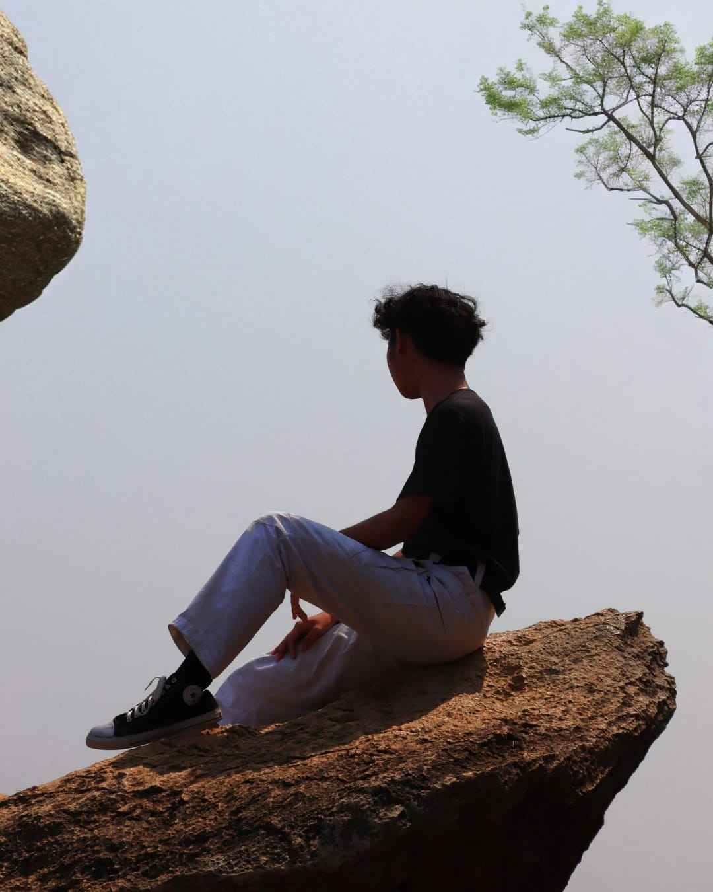

03 / THE PERSON BEHIND ITA NOTE, NOT A MANIFESTO
HELLO,
STRANGER.
Creative by curiosity. Professional by practice. Still figuring things out in public.


PERSONAL ARCHIVE / 01S—01NOT A FINISHED PRODUCT.
JUST GETTING STARTED.
A LITTLE INTRODUCTIONI LIKE MAKING
SEE WHAT I MAKE ↗
I LIKE MAKING
THINGS MEAN
SOMETHING.
I'm Sakti — a visual creative interested in design, digital content, motion and 3D experiments. I like the space between an idea and its final form: the sketches, wrong turns, late-night tweaks and the tiny details that make a piece feel alive.
This site is my corner of the internet: a place to collect the work, try new directions and keep a record of what I'm learning. The words here are a starting point, so make them yours.
01VISUAL DESIGNLayouts / identity / digital
02MOTION & VIDEOEditing / storytelling
033D EXPERIMENTSShape / light / render

MAKE IT WITH
INTENTION.
LEAVE ROOM FOR
THE ACCIDENTS.